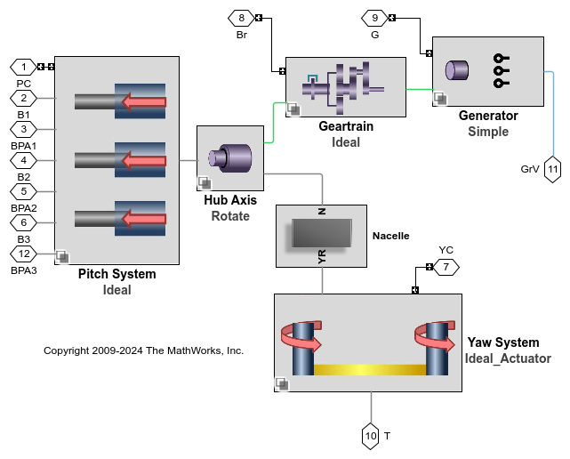

Generated by the Simulink Report Generator
23-Oct-2025 14:28:31
List of Figures
- 2.1. Nacelle Yaw
- 2.2. Pitch Command and Angle (deg)
- 2.3. Rotor Speed (RPM)
- 2.4. Wind
List of Tables
- 3.1. Simulation Time
% CONFIGURE TURBINE WT_Configuration = 'I_Pitch IA_Yaw Ge Lift_Drag'; Select_Turbine_Systems(WT_Configuration, WT_Configs);

% SAVE ELAPSED TIME WT_Results_RPT{end+1,1} = WT_Configuration; WT_Results_RPT{end,2} = Elapsed_Sim_Time; Simulation_Time = get_param(bdroot,'StopTime'); WT_Results_RPT{end,3} = 80; WT_Results_RPT{end,4} = 80/Elapsed_Sim_Time;

% SAVE ELAPSED TIME WT_Results_RPT{end+1,1} = WT_Configuration; WT_Results_RPT{end,2} = Elapsed_Sim_Time; Simulation_Time = get_param(bdroot,'StopTime'); WT_Results_RPT{end,3} = str2num(Simulation_Time); WT_Results_RPT{end,4} = str2num(Simulation_Time)/Elapsed_Sim_Time;